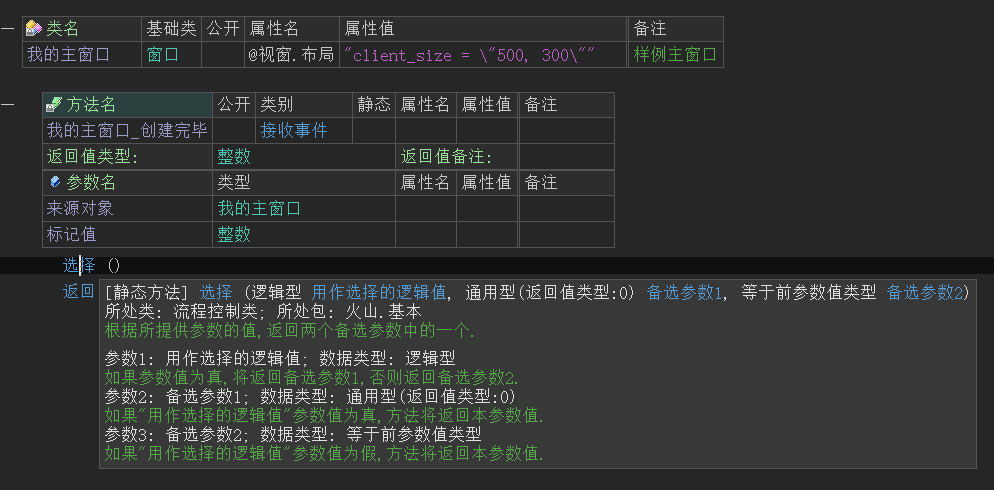
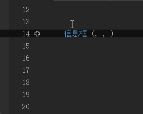
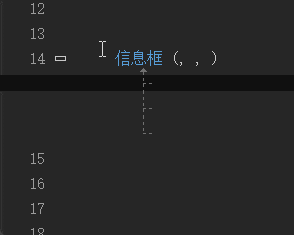
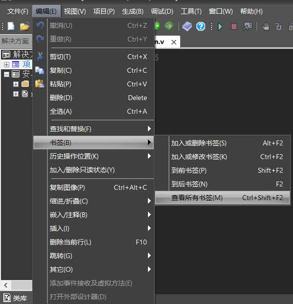
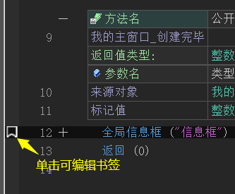
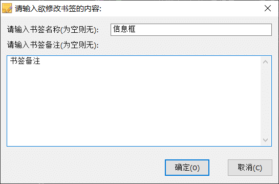
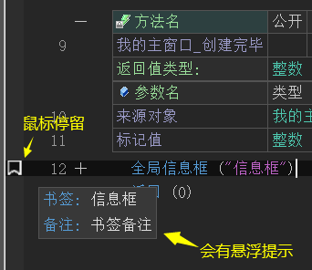
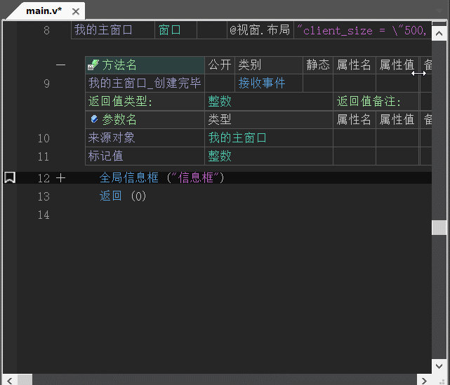
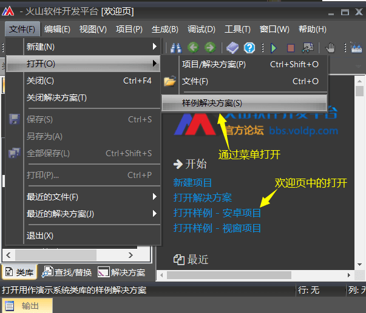

1、帮助页
1.1 概述
帮助页是火山平台提供的即时帮助系统，可用于查看类、方法、变量、常量等数据的帮助信息。
便于在遇到一些陌生方法时，能够掌握如何使用。具体使用方式可看：第二章第九节：火山类库方法识别与调用。
1.2 类库帮助页
如下图为方法帮助页的效果，其它类型的帮助页效果大同小异，只是所显示的数据不同。
下面介绍类库帮助页中最常用的几个功能：
(1) 打开
本功能用于定位源代码，便于在一些方法存在问题时方便自己修改。
(2) 选择
用于在类库夹中定位所处位置。
(3) 例程
用于在火山系统例程库中搜索当前方法是否有对应案例，如果有将会打开“例程查找结果”窗口。
(4) 添加模块到项目
用于配置当前类/方法/变量/常量等数据所处的模块添加到当前活动项目中。
类库帮助页有以下打开方式：
(1) 类库夹中首次打开需要双击，随后可单击进行切换。
(2) 利用类库搜索打开
(3) 光标定位关键词，使用快捷键F1打开，部分电脑可能需要Fn + F1。
1.3 项目帮助
通过右键项目选择“查看程序结构”或使用快捷键“Shift + F1”即可打开当前项目的帮助窗口。
项目帮助窗口效果如下图：


2、悬浮提示
鼠标在代码语句上停留大约1秒，会提示当前方法的参数等信息，便于不打开帮助页时也可查看帮助信息。

3、参数展开提示
使用快捷“Alt + Enter”可以展开参数表，当参数过多时可通过参数表得知当前正在输入哪个参数。

如果快捷键冲突无法使用，也可以通过点击加号图标实现展开和关闭参数表。

4、书签
书签用于标记某行代码，设置额外注释信息，多个书签之间可通过快捷键“F2”进行跳转。
其功能位于“编辑 -> 书签”菜单中。

加入书签后会在代码行左侧出现一个小图标：

书签编辑窗口：

书签提示信息：

使用快捷键F2可进行书签切换：

5、例程库
火山平台提供了非常丰富的例程库，内置了大量的案例，并在逐步完善。
可通过“文件->打开->样例解决方案”或欢迎页中的“打开样例-XX项目”进行打开系统例程库。
